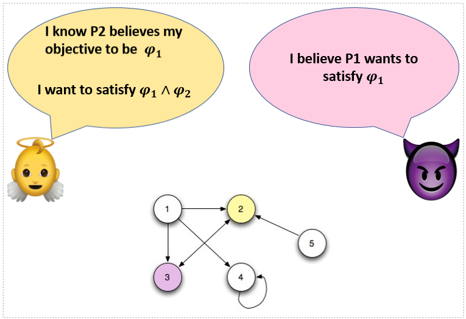

|
Research Overview
My primary research interest is in formal methods (reactive synthesis) with applications to robot decision making and cybersecurity. I am particularly interested in exploring the use of temporal and epistemic logic in the synthesis of correct-by-construction strategies for autonomous agents.
On-going Research
I am currently working on the following research.
1. Sequential Hypergames: Modeling, Specification and Learning-based Synthesis of Deceptive Policies
|
 |
The goal of this project is to develop models and methods for intelligent decision-making that leverage information for strategic advantages. The project introduces a variant of hypergames to capture temporally evolving strategic interactions in games with asymmetric information and complex mission specifications. We propose to integrate learning to predict the evolution of perception of the opponent about the other players’ payoffs. The integration of prediction and game-theoretic planning will serve the foundation to optimal policy synthesis methods, employing multiple deceptive mechanisms.
Publications:
Abhishek N. Kulkarni, Jie Fu, “Synthesis of Deceptive Strategies in Reachability Games with Action Misperception”, IJCAI 2020 (accepted). (preprint)
Abhishek N. Kulkarni, Huan Luo, Nandi O. Leslie, Charles A. Kamhoua, Jie Fu,, “Deceptive Labeling: Hypergames on Graphs for Stealthy Deception”, IEEE Conference on Conference on Decision and Control, 2019 (Submitted). (preprint)
Abhishek N. Kulkarni, Jie Fu, “Opportunistic Synthesis in Reactive Games under Information Asymmetry”, IEEE Conference on Decision and Control, 2019. (IEEEXplore)
|
|